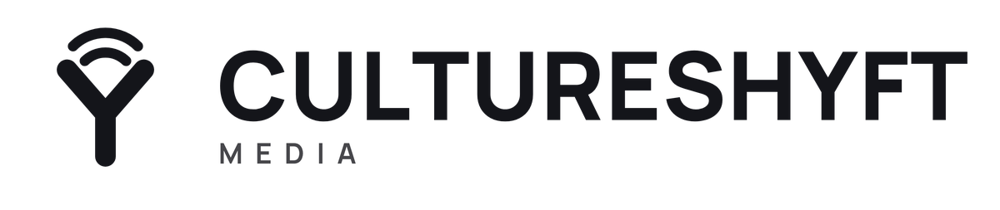

The mark
The Y in Shyft is a broadcast antenna: two orange arcs on a bold Y. The spelling is the brand.
Horizontal · on dark
Stacked
Mark

Mono black
Mono whiteColours
Shyft Orange#FF5A1F · 255 90 31 · C0 M65 Y88 K0
Ink#14151A · 20 21 26 · rich black
Paper#FFFFFF
Sand#F4F3EF
Slate#6A6E78
Ember tint#FFE8DC
Orange is used once per layout and never behind small text. Closest Pantone for print: 1655 C.
Type
Manrope, one family, free for commercial use. ExtraBold for headlines, Bold for labels, Medium for body.
Shyft the room.
Headlines are short and left-aligned.
Body text stays around 65 characters a line, Medium weight, with real breathing room. Numbers as numbers: 48 hours, 3 sizes.
Labels in caps with letter-spacing
Voice
Tone: bold, warm, quick, clear. Short sentences. Lead with what the reader gets. No exclamation marks in body copy; the orange does the shouting.
Tagline: Media made to move people.